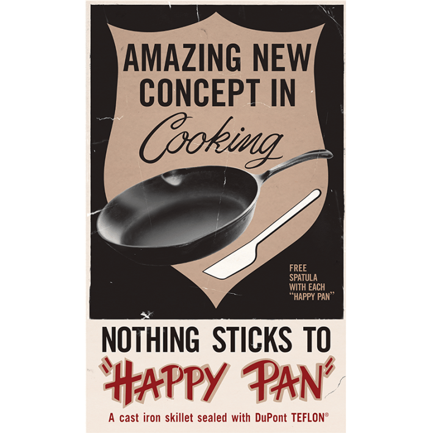

The same substance that makes for stress-free stir-fries also played a crucial role in the Manhattan Project.
The inventor of polytetrafluoroethylene (PTFE), which you likely know as Teflon, received a patent this week in 1941 for his revolutionary creation.
Chemist Roy Plunkett discovered PTFE by accident: In 1938, he was developing new refrigerants for the chemical company DuPont—at the time, common yet often toxic refrigerants had a bad habit of blowing up or leaking into homes, putting people at serious risk.
At DuPont’s Jackson Laboratory in New Jersey, Plunkett and technician Jack Rebok were tinkering with tetrafluoroethylene gas as an alternative, which they kept in frosty canisters. One morning, they found that this gas had disappeared from a canister—but they did find a mysterious white powder inside.
It turns out that the iron inside the canister had prompted the gas to transform into a solid substance known as PTFE. Plunkett started experimenting with this curious material, and noticed that it stayed intact at sizzling temperatures, and even super powerful acids capable of breaking down human bones failed to destroy it.

KITCHEN INNOVATION: An ad for the first Teflon pan sold to U.S. consumers. Image by trozzolo / Wikimedia Commons.
That said, PTFE didn’t see its day in the sun until around 1942, when it served as a key ingredient for the Manhattan Project’s success. At a government facility in Oak Ridge, Tennessee, that refined the uranium required to build the atomic bomb, the uranium hexafluoride used in this process kept degrading the valve seals and gaskets that it traveled through.
It isn’t clear how exactly PTFE landed in this facility, but plenty of DuPont employees were working at a nearby plant that refined plutonium. Ultimately, PTFE guarded the Oak Ridge uranium plant’s pipes for decades.
PTFE began its trajectory to our kitchens in 1945, when the Teflon trademark was registered by Kinetic Chemicals, a collaboration between DuPont and General Motors. Not long after, Kinetic Chemicals began churning out more than 2 million pounds of Teflon per year. New versions of PTFE soon emerged that were easier to mold or extrude, and its commercial appeal continued to grow. In 1961, the first Teflon-coated skillet, known as the Happy Pan, hit the U.S. market.
Read more: “Can Humanity Stem the Plastic Tide?”
Later that decade, Wilbert and Bob Gore invented a waterproof fabric that incorporated a type of PTFE—today, Gore-Tex is found in many hiking boots and raincoats. You can also find PTFE in plenty of other products these days, including makeup, medical equipment, kitchen appliances, sofas, and dental floss.
PTFE prompted the development of a massive family of chemicals known as per- and polyfluoroalkyl substances, or PFAS. They have long proven valuable because they tend to repeal water, heat, and grease, and are super tough. Their extraordinary durability owes to their carbon-fluorine bonds, which are some of the strongest known in chemistry.
These remarkably tight bonds ensure that PFAS linger in the environment, and these chemicals can make their way into our bodies through air, soil, water, and food, among other avenues. Today, nearly all people in the U.S. have PFAS in their blood, and these substances have also been found in the placenta, brain, and lungs.
Scientists haven’t yet made definitive links between PFAS and health issues, but research suggests that exposure can weaken our immune systems and increase the risk of conditions such as cancer, liver disease, and birth defects.
The Trump administration has recently launched an attack on federal regulations limiting PFAS concentrations in drinking water. But states passed a flurry of bans on PFAS in consumer products last year, and some companies have voluntarily phased out certain substances.
As evidence piles up against Teflon and other forever chemicals, more people are ditching nonstick pans and increasingly opting for stainless steel, ceramic, and cast iron cookware. While the upkeep may prove more of a headache, it appears that home cooks are keeping their health in mind. 
Enjoying Nautilus? Subscribe to our free newsletter.
Lead image: santima.studio / Shutterstock